| 日付 | 2016年5月5日（木） - 2016年5月7日（土） | ||
|---|---|---|---|
| 山域 | 伊豆諸島 | ||
| メンバー | 家族（妻、長女・5歳、長男・2歳） | ||
| 山行形態 | 子連れ2泊3日ホテル泊 | ||
| アクセス | 電車、船、車、バス | ||
| ルート (Map) |
|
3日目
本日は最終日。2日間お世話になった宿を後にする。
部屋も食事も素晴らしく、もう1部屋の宿泊者も同年代の子連れ家族だったため
楽しく過ごすことができた。
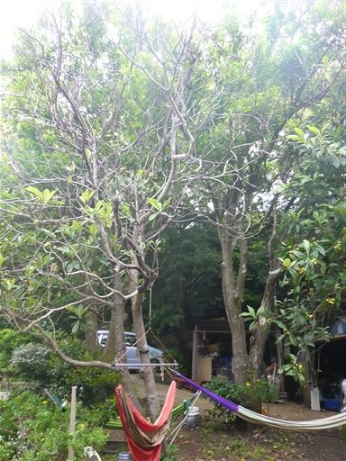
本日は三原山の裏砂漠を見学する予定。
途中で筆島に立ち寄る。海の中に突き立つ30mの岩だ。
これはかつての火山の火道が残ったもの。
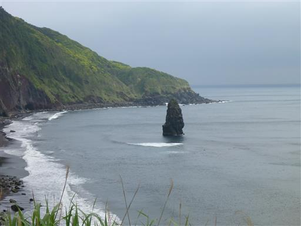
駐車場から裏砂漠を目指して歩く。
この辺りは昨日歩いた場所よりも、荒涼とした風景が見られるらしい。
しかし、山の中腹から上部は雲に覆われていて天気が悪い。
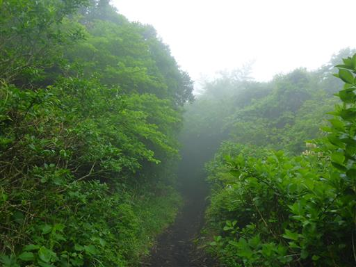
裏砂漠に到着して辺りを見渡したが、視界は全くない。
完全な雲の中だ。
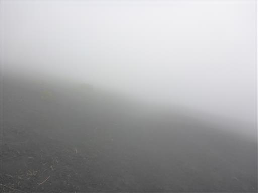
しばらく歩いてみると、「もく星号遭難の地」と書かれた場所に至る。
かつて飛行機が墜落した場所のようだ。
何の目印も無い場所で道に迷いそうなので、おとなしく引き返すことにする。
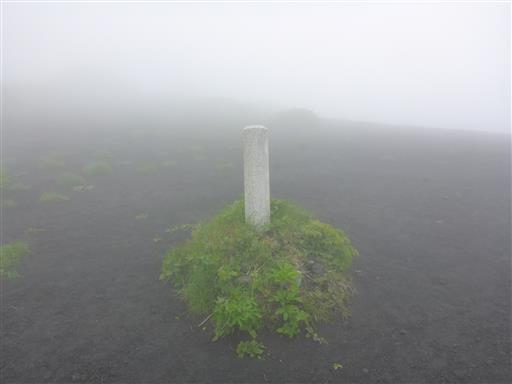
あまり海で遊べていないため、トウシキ海岸に行ってみる。
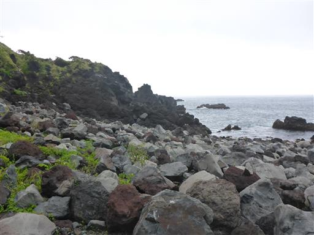
波は高いが、少しだけタイドプールがある。
残念ながら周囲の風景はあまり美しいとは言えない。
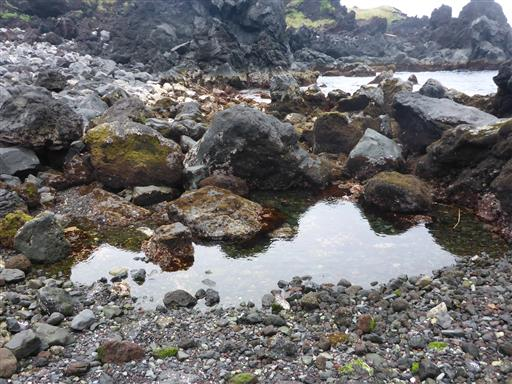
背後には絶壁が連なっている。ここも荒涼とした風景だ。
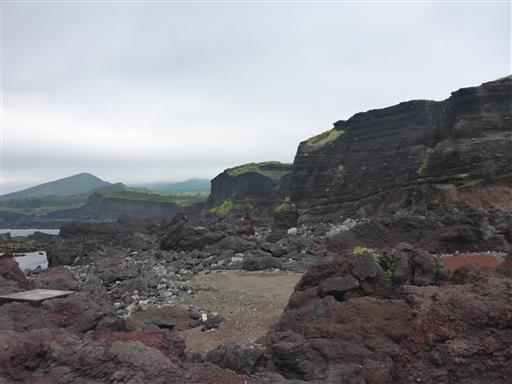
タイドプールで生物を探してみる。
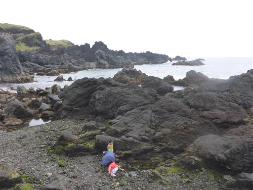
苦労してカニを一匹捕まえる。
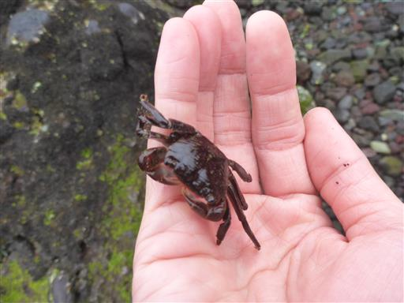
子供たちは貝やヤドカリを捕まえて遊んでいる。
生物の数はあまり多くないが、探せばそこそこ見つかる。
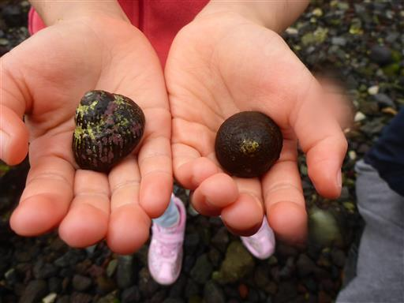
一通り海で遊んだら、昼飯時になったので波浮港に向かう。
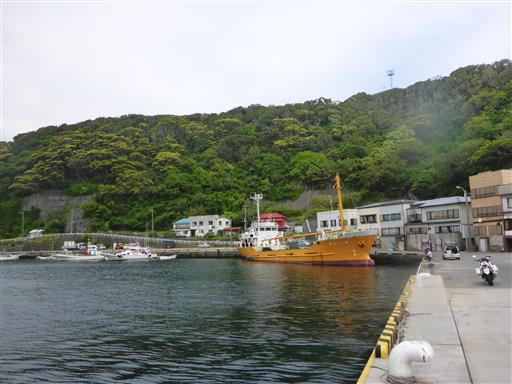
観光地なのだが、食事処が見つからない。
満席の寿司屋が1店あるだけで、それ以外は閑散としている。
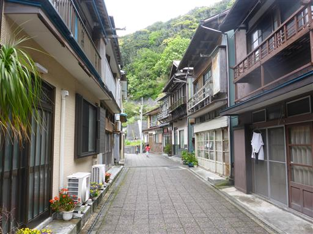
階段を上がって坂の上にある町を目指す。
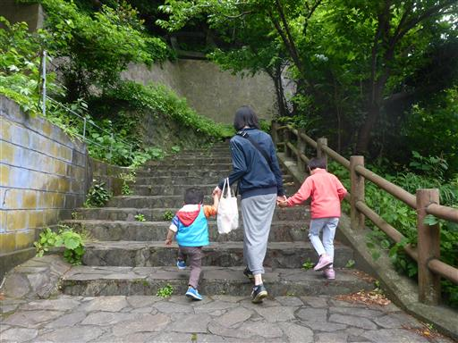
住人に食事処を尋ね、成田屋食堂に辿り着く。
道案内をしてくれたおじいさんによると、波浮の町は昔は非常に繁栄していたらしい。
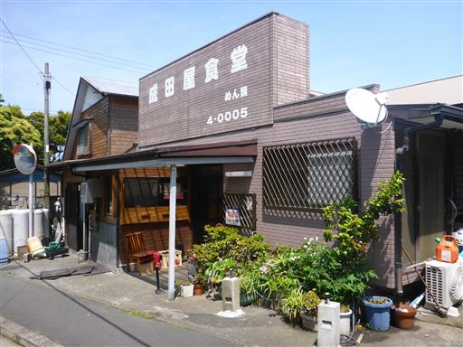
食事後は有名な鯛焼き店「島京梵天」に立ち寄る。
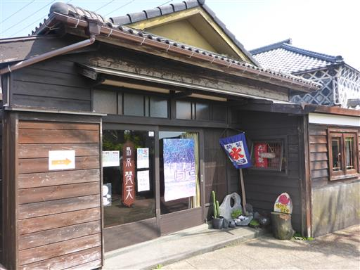
有名店だけあって、鯛焼き1つに大いに待たされる。
出てきたのは名物の羽つき鯛焼き。
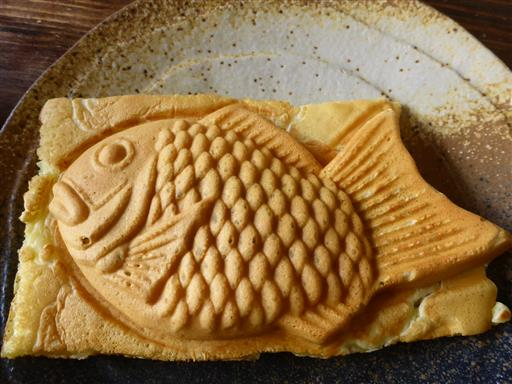
階段を下って港に戻る。
丸い形をした小さな港はかつての噴火口だ。
周囲は崖に囲まれていて、風光明媚な港だ。
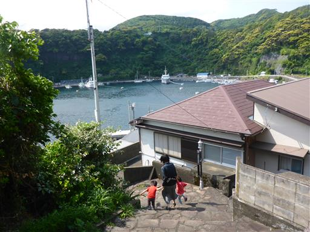
これで観光は終わり。車を返して港に戻る。
本日の出港地も岡田港だ。
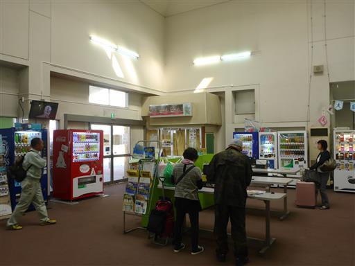
船の時間まで少しあるので、再び近くの日の出浜で遊ぶ。
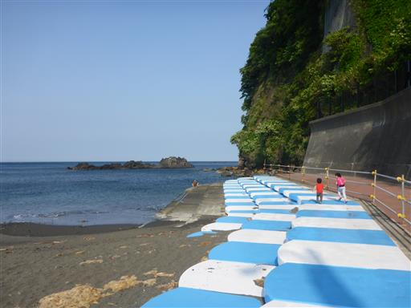
しばらく遊ぶと乗船の時間。これで伊豆大島とお別れだ。
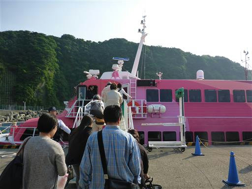
別のジェット船とすれ違う。船体はほとんど宙に浮いている。
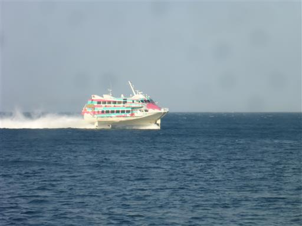
2時間弱の船旅。子供たちは途中で眠ってしまった。
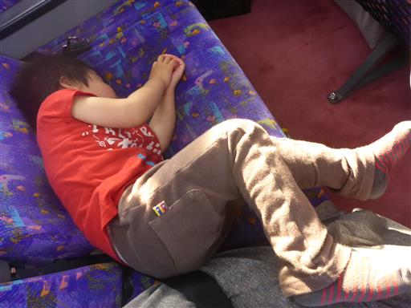
東京湾に入り、お台場が見えてくる。
特徴的なフジテレビの本社ビルが見える。
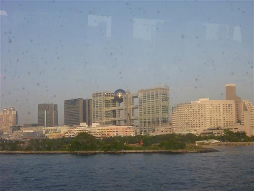
レインボーブリッジを潜る。もうすぐ到着だ。
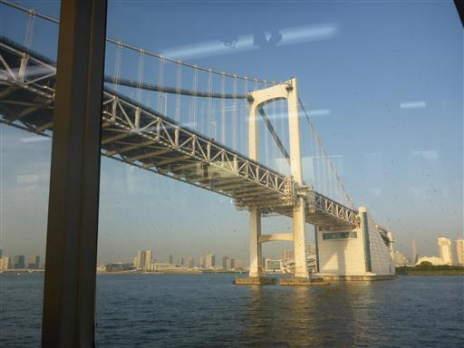
船を下りたら新橋の居酒屋で夕食をとって帰宅の途に就く。
今回は天候にさほど恵まれず、1日短い旅行になってしまったが、
現地の人々のもてなしに心癒される旅行だった。
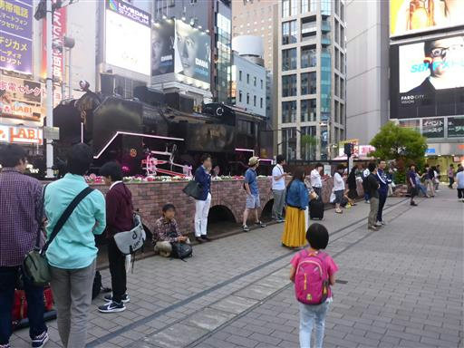